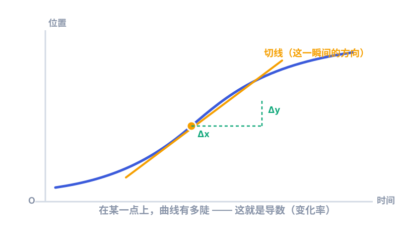
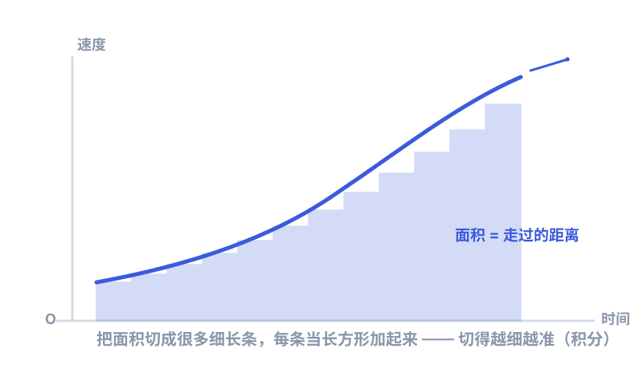

一、一个老难题：怎么描述"变"？
在牛顿之前，数学很擅长算"不动的东西"：一块地的面积、一个立方体的体积。可真实世界几乎都在动——行星在跑、苹果在落、温度在升降。这些量每时每刻都在变，老办法算不准。
① 一颗炮弹飞行时，速度一直在变。问"它此刻有多快"，可"此刻"是一瞬间，没有"一段距离 ÷ 一段时间"，怎么算？
② 一条弯曲的山坡，底下那块不规则的面积，怎么求？
牛顿和另一位数学家莱布尼茨，各自独立想出了同一套工具来对付它们。这套工具，就是微积分。
二、微分：把"变化"切成瞬间
先想"速度"。通常速度 = 路程 ÷ 时间。可如果时间取"一整天"，算出来的是平均速度，看不出某一秒的快慢。牛顿的办法是：让时间差 小到几乎为零，再去求那个比值——这个小到几乎没有的瞬间比值，就是"此刻的速度"，数学上叫瞬时变化率，也就是导数。

用大白话说：微分就是研究"现在这一刻，到底变得有多快"。它把一条弯弯曲曲的变化，拆成无数个微小的瞬间来研究。
三、积分：把"碎片"拼回整体
微分是把整体拆细，积分正好反过来：把无数细小的碎片，重新加起来，得到整体。
还是那个不规则山坡的面积。牛顿的办法很巧妙——把曲线底下的区域，切成一堆又窄又细的竖条，每条近似当成长方形；条越切越细、越多，这些小长方形面积加起来，就越接近真实面积。这个"无限细分再求和"的过程，就是积分。

牛顿发现了一个惊天的事实：积分和微分互为逆运算——就像加法和减法。一个是"拆细看变化"，一个是"拼起来看总量"。这个发现后来被称为微积分基本定理，是整座微积分大厦的基石。
四、牛顿为什么非要发明它？
不是为了炫技。他当时正被几个真问题卡住：
- 行星轨道：行星绕着太阳走椭圆，速度时快时慢，怎么精确描述它的运动？
- 切线：光线打在曲线镜面上会怎么反射？得先知道曲线在那一点的"方向"。
- 引力随距离变：离得越远力越弱，这个"变着变着"的力，怎么累加出整条轨道？
没有微积分，这些问题根本算不了。可以说，牛顿是为了给《原理》里的物理学找数学工具，才顺手发明了微积分。工具造好了，物理才讲得通。
五、一段著名的"发明权之争"
几乎在同一时期，德国数学家莱布尼茨也独立发展出了一套微积分，符号还更漂亮、更好用（我们今天用的 ∫ 和 d，就来自他）。于是两边的支持者闹了很久：到底谁先发明？
今天学界的看法是：两人各自独立发明，彼此都配得上功劳。牛顿胜在物理应用早，莱布尼茨胜在符号体系清晰。这场争论也提醒我们：伟大的想法往往"时机到了"就会同时冒出来，不止一个人能想到。
六、它今天在哪里？
你可能觉得微积分离自己很远，其实它无处不在：
- 手机导航算你的最佳路线，背后是求变化、求最优；
- 天气预报的模型，靠的是解一大堆随时间变化的方程；
- 人工智能训练时调整上亿个参数，本质上就是反复求变化最快的方向；
- 造桥、造火箭、造疫苗剂量，全都要算"变化"和"总量"。
所以，下次听到"微积分"别怕——它无非是牛顿留给我们的、用来对付"变来变去的世界"的一把万能尺。